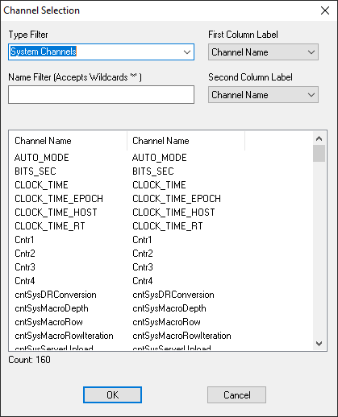
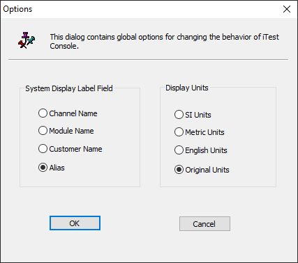
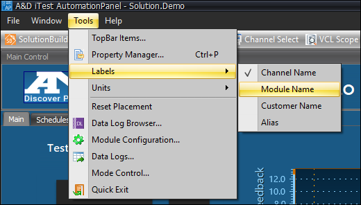

iTest User's Guide
iTest channels are the foundation for developing an iTest application. This document explains the importance of channels and provides detailed information such as channel names, channel types, the RDB, and the application of channels for building tests.
A channel is a path along which data is transferred between units under test and the iTest software system. In iTest, channels are given a name and assigned a set of attributes. They are used to build displays, write tests, develop scripts, add limits, and perform many other tasks. Channel sources are derived from I/O modules, measurement devices, smart subsystems (e.g., emissions benches or battery cyclers), or even calculations performed inside iTest. Additionally, sources can include external servers such as LabCentral and operator data-entry screens.
iTest channel names are composed of any ASCII alphabetic or numeric character. The following special characters are also supported:
 |
NOTE: | The first character of a channel name must be a letter. Channel names cannot begin with numerics or special characters. Channel names are case insensitive. |
Understanding the iTest RDB (real-time database) is useful for understanding how to design and develop iTest solutions. The RDB is a key architectural feature of iTest; it is the area of memory where channel definitions are stored while iTest is running. The RDB consists of a shared memory area and an API used to access this area of memory. In general, any references made in the iTest documentation to the RDB is a referral to the live data area where the current values and attributes for each channel is stored. When you look at an iTest channel such as Speed, Torque, or DynoSetpoint on a display object, that object is showing the current value from the RDB. In addition to having a field in the RDB that reflects current value, the RDB also reflects other dynamic attributes such as High Limit, Low Limit, Low EU, and High EU, as well as many other values that may change during the course of a test.
In iTest, channels are specified by type; these types contain attributes that are unique to the channel. For example, Analog Input type channels have selectable filters and Frequency type channels have a measurement window setting. These channel types are handled uniquely by iTest.
The default iTest channel types are described in the following table. Note that the read-only column denotes channel values that are set by the drivers that acquire them. The values from these types should not be set using VCL, mailslot messages, or tests. All other channel types can be written to or read from.
Channel Types and Attribute Descriptions
| Type | Description | Read Only |
| Temperature | Temperature channel type sources are typically thermocouple or resistance temperature detectors (RTD). The source differs depending upon the actual I/O system. | Yes |
| Analog Input | Voltage or current values from A/D cards. These channel types are typically calibrated with the iTest Calibration program. | Yes |
| Analog Output | Sends output signals to A/D cards (e.g., Throttle Command). | No |
| Frequency | Reports frequency measurement from a frequency card or device. | Yes |
| Period | Measures the period of a frequency signal. | Yes |
| Digital Input | Monitors digital device modules for true or false (on or off) logic (e.g., monitoring a switch position). | Yes |
| Digital Output | Sets output based on true or false (on or off) logic. | No |
| Virtual Input | A virtual input is a calculated value. This channel type is associated with a formula and is calculated at the system scan rate. | Yes |
| Virtual Output | The most general purpose channel type that can be used in various situations. It is very flexible as its values can be set on the real-time system using VCL and calculations. Virtual Output channels can also be set from the operator GUI. | No |
| Virtual Timer | A software timer that counts up or down. You can use VCL commands to start, stop, or reset timers. | Yes |
| Virtual String | A general purpose channel type that uses text-based values only rather than numeric values. | No |
| Totalize | This function counts state transitions up to a maximum count of 16,777,215. When the maximum count is attained, the counter resets to zero and begins to count again. | Yes |
| PWM Input | Used to acquire the reading from a PWM input module. | Yes |
| PWM Output | Used to set the value of a PWM output module. | No |
| Virtual Output Array | Creates a collection of virtual output values (up to the maximum allowed number). Using this channel type requires additional configuration. For further information regarding array channels, refer to the iTest Array Channels documentation. |
No |
| Virtual String Array | Creates a collection of virtual string values (up to the maximum allowed number). Using this channel type requires additional configuration. For further information regarding array channels, refer to the iTest Array Channels documentation. |
No |
System channels are channels that are required by iTest in order to run properly. These are added automatically when iTest loads and can be identified by "System Channel" in their description field. To view a list of all the system channels in your solution, use the Channel Selection dialog and select the System Channels filter.
System Channels

To view a list of all system channels, refer to the iTest System Channels document.
Internal variables are special channels that have no attributes associated with them. These channels can be used and referenced in VCL, calculations, and some mailslot messages but cannot be used on displays or in data logs. Internal variables are stored in the Intervar.dat file located in the $SUPPORTDIR. The format of the file is one variable per line followed by an optional value where the value is used to provide the initial value for that variable. You can edit this file by double-clicking on the Channels > Internal Variables node in the Test Manager tree bar or navigating to the Internal Variables editor in SolutionBuilder. For more information on how to manage Internal Variables in SolutionBuilder, refer to the Internal Variables documentation.
An example of an intervar.dat file is represented below:
valEcc1SetpointLast tEcc1Min 25 tEcc1Max 120 tEcc1Add tEcc1Sub tEcc1Change tEcc1New colEoc1Mode colEoc1RampMode colEoc1RampValue colEoc1SP numEoc1RampTics valEoc1SetpointLast tEoc1Min 25 tEoc1Max 120
The advantage of using internal variables is that they can improve performance. Using internal variables requires less overhead than normal iTest channels because they do not get transferred across the network. Their values are "internal" to the vxin_exec process only. Additionally, they do not add entries to the channel select dialog or other GUI elements where a channel list is displayed. Therefore, putting flags, intermediate calculations, and other values that the operator should not have to see within internal variables can help reduce the visible content and improve usability and performance of the solution.
Internal variables can only be accessed through a procedure or calculation. They are not available through any editor and cannot be displayed on a screen control.
The following values are calculated by default when statistics are enabled for a database channel:
Five Internal Variables are created automatically for each channel that has statistics enabled, one for each of the values described above. The following table describes the naming conventions for these internal variables:
Internal Variables Descriptions
| Name | Description |
| <ChannelName>_Minimum | (FLOAT) |
| <ChannelName>_Maximum | (FLOAT) |
| <ChannelName>_Mean | (FLOAT) |
| <ChannelName>_StdDev | (FLOAT) |
| <ChannelName>_Slope | (FLOAT) |
Two additional internal variables are also created to expose a database channel's stability state and, if the database channel is not stable, the reason for the instability. The following table describes the naming conventions for these two internal variables:
Additional Variables Descriptions
| Name | Description |
| <ChannelName>_Stability | (FLOAT) |
| <ChannelName>_Reason | (FLOAT) |
iTest automatically calibrates Analog Inputs, Temperatures, and Virtual Inputs if the proper coefficients have been entered for these channels. For more information on how iTest uses coefficients in the RDB, refer to the Calibration Coefficients documentation.
For complete information regarding iTest limitations, refer to the System Maximums documentation.
Channels are stored in channel definition files. These files are flat, tab delimited ASCII files that use the .fil extension. Each row represents a channel, and each column represents a unique attribute or field for that channel. Channel definition files can be managed in Test Manager or SolutionBuilder. After channel definition files are created, they are stored in the $SUPPORTDIR\DB folder.
For more information on how to manage channel definition files, refer to the following documents:
iTest supports designating a "default" channel definition file. This is a channel definition file that cannot be deactivated and will always be loaded into the RDB at startup. This information is stored in the powertek.ini file using the DefaultDatabaseFile setting.
Test Manager does not include a mechanism to set the DefaultDatabaseFile powertek.ini setting. To designate a default channel definition file, add the name of the channel definition file including the .fil file extension to the DefaultDatabaseFile setting in the $SUPPORTDIR\powertek.ini file. If the channel definition file is not in the $SUPPORTDIR\DB\ folder, then you must include the fully-qualified filepath as part of the setting (e.g., DefaultDatabaseFile=C:\ADT\iTest4.1\SysDefaultChannels.fil).
Each channel in iTest can have up to three names and an optional label. The channel name is its primary name; the other names include Alias, Customer, and Module. The primary channel name is the name as defined in the channel definition file. The same channel can be referenced by its other names, depending upon the configuration of the solution you are running. Alias, Customer, and Module names can be managed using Test Manager. Refer to the Managing Channels in Test Manager documentation for more information.
While iTest is running, you can change the preferred label for all channels. Any display object that has the label field set to "Automatic" instead of a specific label will change to use the system wide selection.
For iTest Console, you can change the current selection by selecting Tools > Options from the main menu. This will display the Options dialog.
Modify Labels

In AutomationPanel, click Tools > Labels from the main menu to change the currently displayed channel label. Select the channel name type to use. This causes all panels that are set up to display the name of RDB channels to use the preferred label from the system.
Modify Labels
